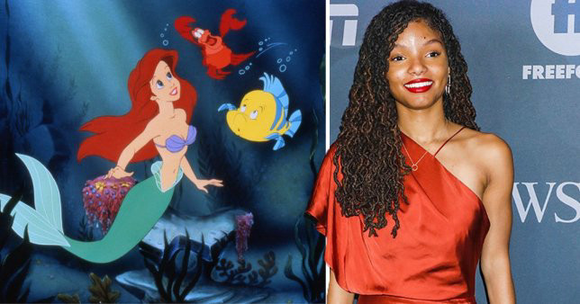
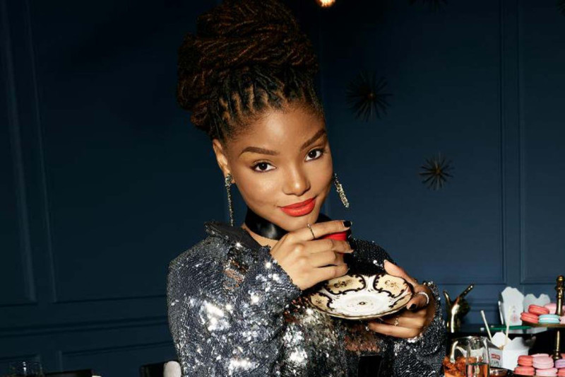
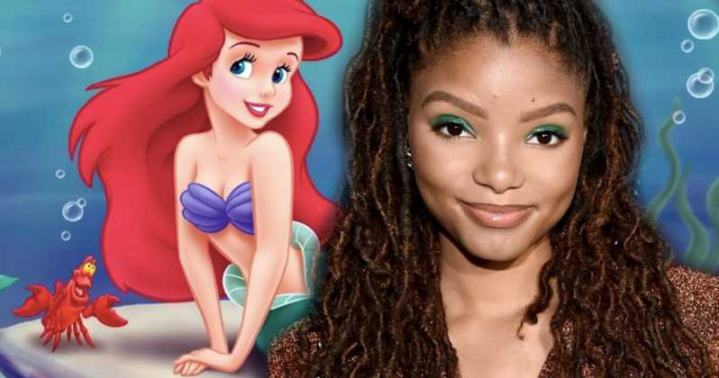
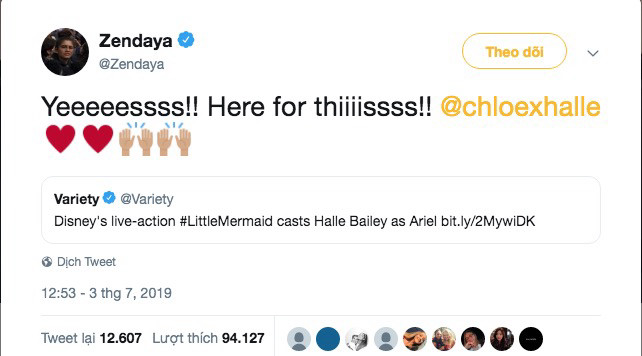

Nàng Tiên Cá da màu mới của Disney là ai?
 Ha Quoc Viet
Ha Quoc Viet

Diễn viên, ca sĩ da màu Halle Bailey là người được chọn vào vai nhân vật chính Ariel trong Nàng Tiên Cá phiên bản live-action, theo thông báo mới nhất của Disney ngày 3/7.
Theo đạo diễn Rob Marshall, người chịu trách nhiệm thực hiện bộ phim, thì Halle Bailey là một lựa chọn không thể phù hợp hơn: “Sau khi chọn lọc kỹ lưỡng, rõ ràng Halle là sự kết hợp hiếm có của lòng nhiệt thành, tuổi trẻ, sự ngây thơ và giọng hát tuyệt vời - tất cả những phẩm chất cần thiết để đảm nhận vai diễn mang tính biểu tượng này.”

19 tuổi, tên tuổi của Bailey cùng Chloe x Halle, nhóm nhạc đã ký hợp đồng với công ty Parkwood Entertainment của Beyoncé sau khi nổi tiếng với các bản cover trên YouTube. Nhận được vai diễn Nàng Tiên Cá lần này chắc chắn là một cú hích lớn trong sự nghiệp nghệ thuật của Bailey. Không giấu được sự thích thú, cô chia sẻ trên Twitter cá nhân: “Giấc mơ thành sự thật".

Việc nữ diễn viên sinh năm 2000 này sẽ vào vai công chúa biển cả khiến khán giả không khỏi bất ngờ. Thông tin về thành công của buổi casting cũng nhanh chóng lan truyền trên mạng xã hội cùng rất nhiều lời chúc mừng của khán giả:
“Tôi rất mong được đưa con gái mình đến xem Halle Bailey vào vai Ariel trong phiên bản live action của Nàng tiên cá. Con bé chắc chắn sẽ ngây ngất khi thấy một cô gái da màu là công chúa Disney.” Ngược lại, một số người không đồng tình với lựa chọn này của Disney: “Là một người da màu, tôi thấy Halle không phù hợp với vai. Bối cảnh câu chuyện được nhà văn Andersen viết tại Đan Mạch. Việc xuất hiện một cô gái da màu tại bờ biển nước này ở thời xưa là bất hợp lý"
Trước khi thông tin này được xác nhận, cũng có tin đồn suốt nhiều tháng về việc Zendaya đang chuẩn bị cho vai diễn Ariel. Mặc dù phủ nhận mọi thông tin về việc đàm phán với Disney, nhưng cô đã thừa nhận rằng vai diễn này thực sự hấp dẫn. Khi Disney xác nhận vai diễn của Bailey, Zendaya đã tỏ ra vô cùng hào hứng.

Dàn diễn viên của Little Mermaid live-action, bên cạnh Halle Bailey, còn có sự tham gia gia của Melissa McCarthy, Jacob Tremblay và Awkwafina. Ngoài ra, đạo diễn Rob Marshall sẽ tiếp tục khâu tuyển chọn diễn viên trong tuần tới để kịp đưa vào sản xuất vào đầu năm 2020.
little mermaid live action